Chongjie Ye
Member of Technical Staff
World Labs
Ph.D., The Chinese University of Hong Kong, Shenzhen
About Me
Chongjie Ye is a Member of Technical Staff at World Labs, where he works on spatial reconstruction that turns a handful of ordinary photos into an explicit, renderable 3D scene, and fills in what the photos never saw. He received his Ph.D. and bachelor's degree from The Chinese University of Hong Kong, Shenzhen, advised by Prof. Xiaoguang Han.
His research asks how reconstruction and generation can strengthen each other. Generation supplies reconstruction with priors: resolving the ambiguities inherent in recovering 3D from images, completing what a capture cannot observe, and keeping geometry estimation robust to reflectance and sensor noise. Reconstruction, in turn, grounds and scales generation: it anchors generated shapes in real observation, and it turns the abundance of ordinary images and videos into 3D data, a scalable path that hand-made 3D assets alone cannot offer.
Recent Projects
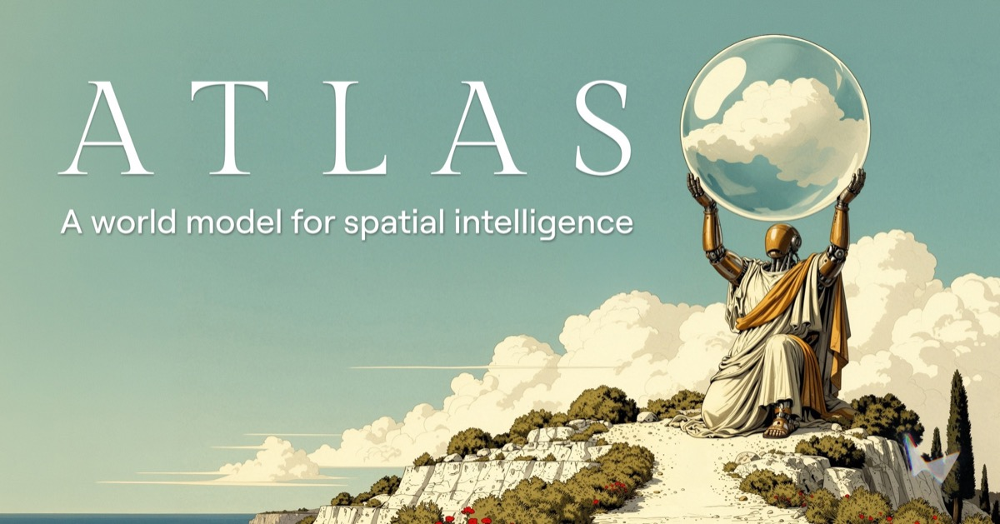
Atlas: A World Model for Spatial Intelligence
World Labs, 2026
Atlas is World Labs' omni world model for spatial intelligence. It reconstructs real-world scenes from one to dozens of input images into explicit 3D outputs (point clouds and Gaussian splats) and renders novel views, outperforming specialized state-of-the-art 3D reconstruction models.
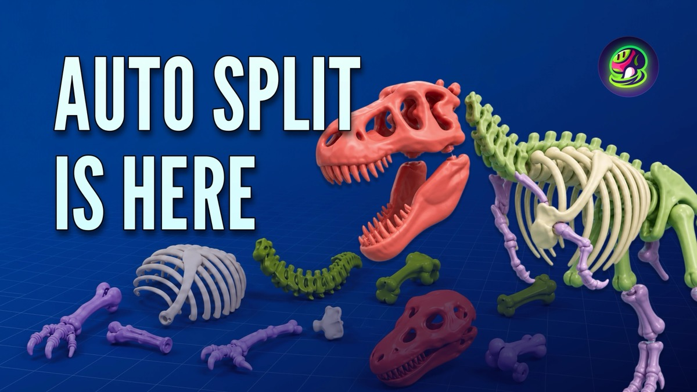
Meshy Auto Split
Meshy AI, 2026
One-click splitting of generated or uploaded 3D models into print-ready parts: structure-aware cuts, watertight capping, auto-arranged build plates, and 3MF export for slicers such as Bambu Studio and OrcaSlicer.
KIRI Engine 4.0: AI-Powered PBR Texture
KIRI Innovations, 2025
Diffusion-based PBR material generation for photogrammetry scans in KIRI Engine 4.0. Instead of a single baked color texture, scans export with physically based materials (albedo, roughness, normal, and displacement maps), so captured objects render realistically under any lighting.
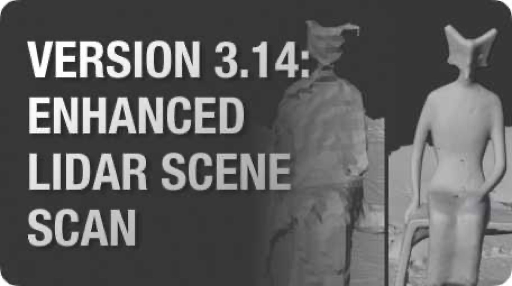
KIRI Engine 3.14: AI-Enhanced LiDAR Scene Scan
KIRI Innovations, 2025
Refines raw iPhone/iPad LiDAR scene scans with learned priors. Backed by StableNormal for surface normal estimation, PromptDA for metric depth refinement, and Light-hloc for camera pose refinement, it drastically improves the resolution, density, and metric accuracy of the depth maps, yielding sharper edges and clean low-texture surfaces.
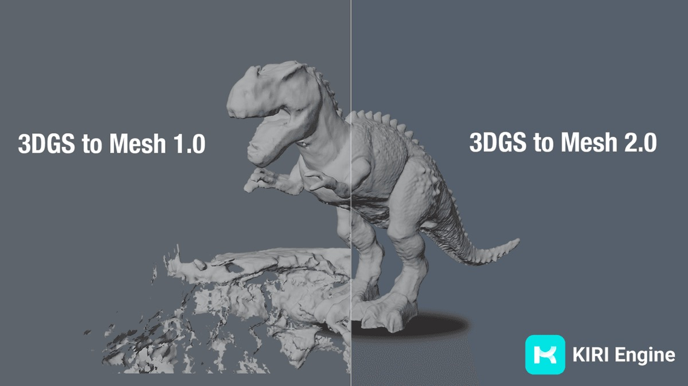
KIRI Engine 3.12: 3DGS to Mesh 2.0
KIRI Innovations, 2024
Backed by StableDelight and StableNormal. Predicted surface normals and specular reflection removal regularize the surface during mesh extraction, eliminating the holes and defects that shiny and transparent regions cause in 3DGS, and delivering clean, watertight meshes on par with professional 3D scanners.
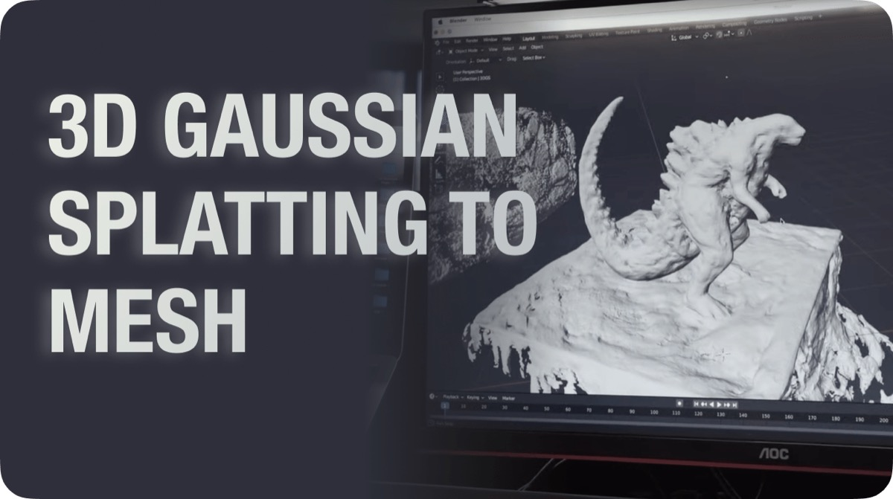
KIRI Engine: 3DGS to Mesh 1.0
KIRI Innovations, 2024
The first app feature to convert 3D Gaussian Splatting scans into meshes. Backed by GauStudio and 2.5D Gaussian Splatting: surface meshes are reconstructed from depth rendered by the trained splat and exported as OBJ alongside the native PLY, making 3DGS captures usable in standard 3D pipelines.
Selected Publications
(* indicates equal contribution, ‡ means corresponding author)
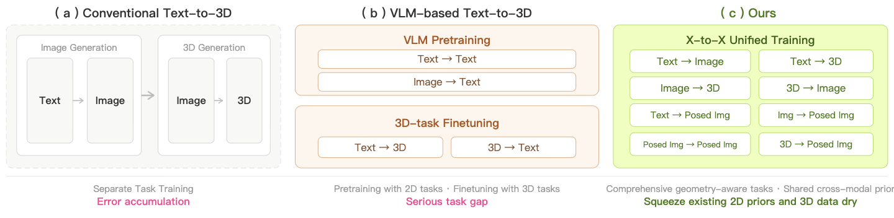
Omni123: Exploring 3D Native Foundation Models with Limited 3D Data by Unifying Text to 2D and 3D Generation
Technical Report, 2026
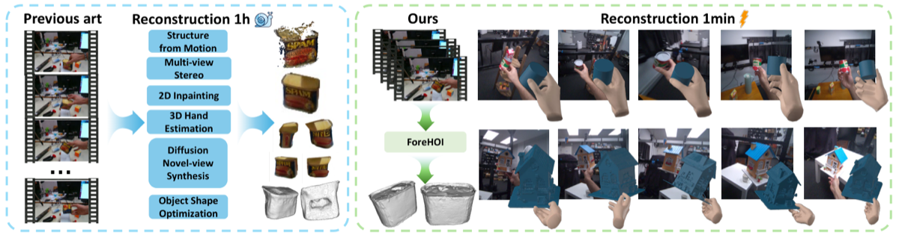
ForeHOI: Feed-forward 3D Object Reconstruction from Daily Hand-Object Interaction Videos
IEEE/CVF Conference on Computer Vision and Pattern Recognition (CVPR), 2026

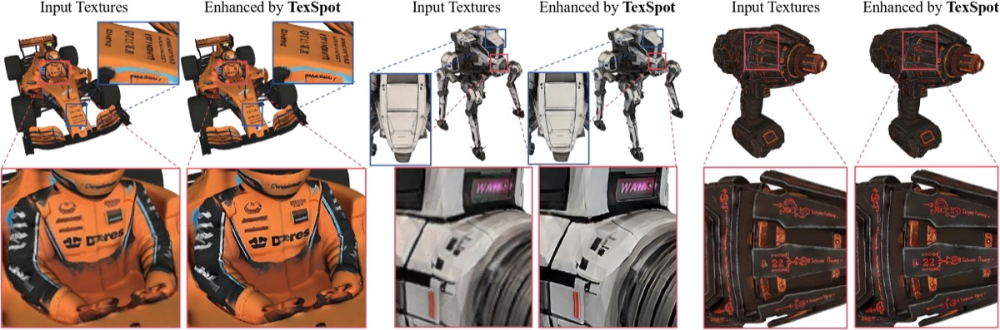
TexSpot: 3D Texture Enhancement with Spatially-uniform Point Latent Representation
SIGGRAPH Asia 2026

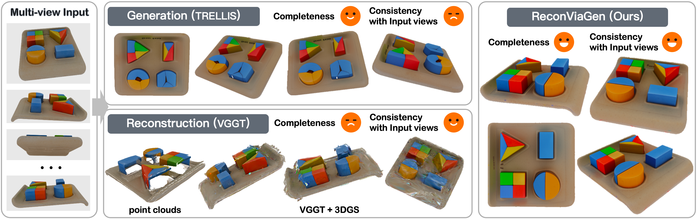
ReconViaGen: Towards Accurate Multi-view 3D Object Reconstruction via Generation
International Conference on Learning Representations (ICLR), 2026

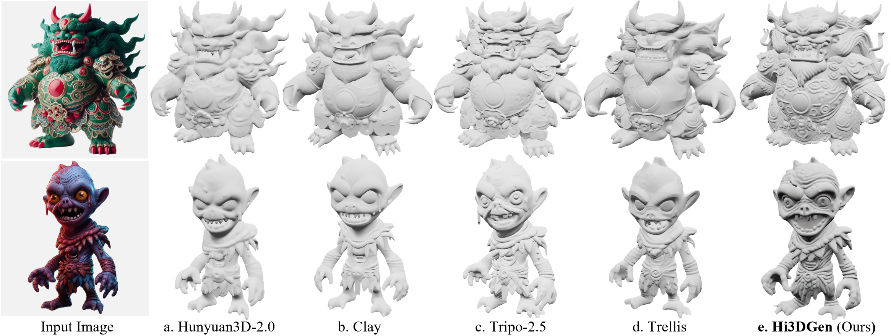
Hi3DGen: High-fidelity 3D Geometry Generation from Images via Normal Bridging
International Conference on Computer Vision (ICCV), 2025

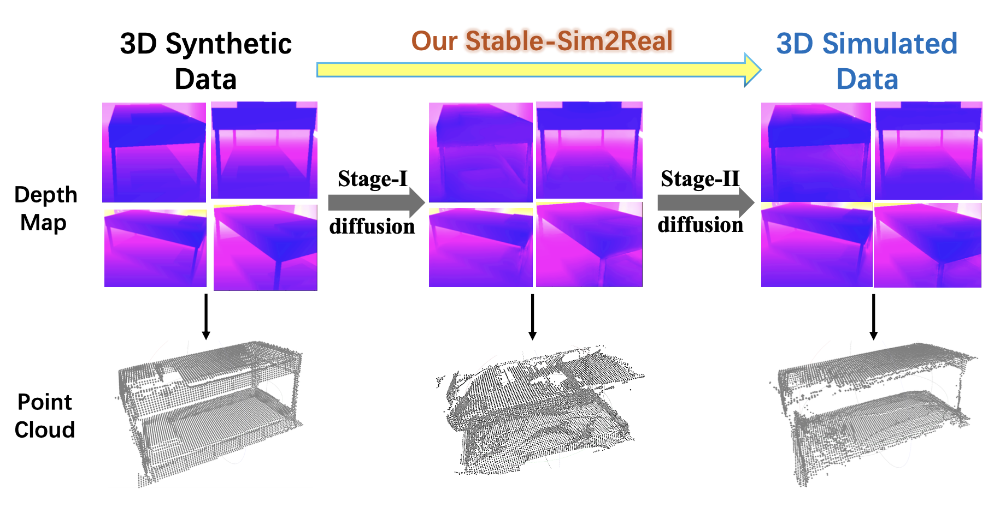
Stable-Sim2Real: Exploring Simulation of Real-Captured 3D Data with Two-Stage Depth Diffusion
International Conference on Computer Vision (ICCV), 2025 (Highlight)

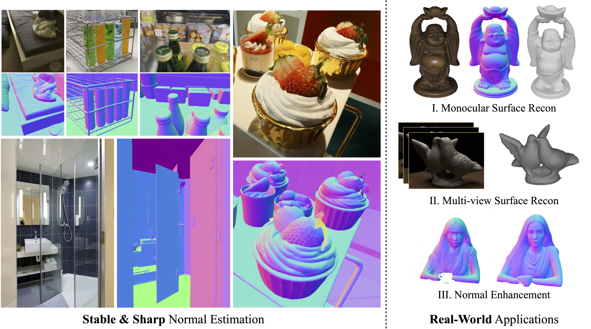
StableNormal: Reducing Diffusion Variance for Stable and Sharp Normal
SIGGRAPH Asia 2024 (ACM Transactions on Graphics)

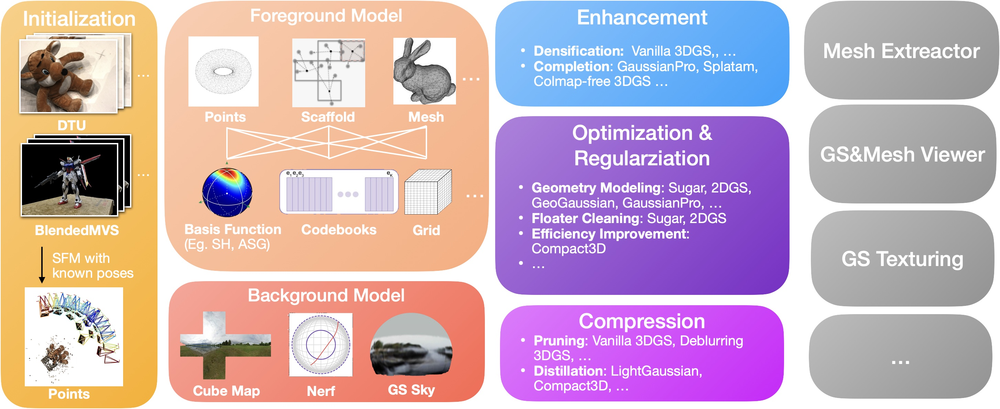

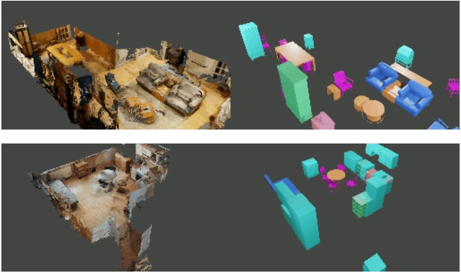
LASA: Instance Reconstruction from Real Scans using A Large-scale Aligned Shape Annotation Dataset
IEEE/CVF Conference on Computer Vision and Pattern Recognition (CVPR), 2024


MVImgNet: A Large-scale Dataset of Multi-view Images
IEEE/CVF Conference on Computer Vision and Pattern Recognition (CVPR), 2023
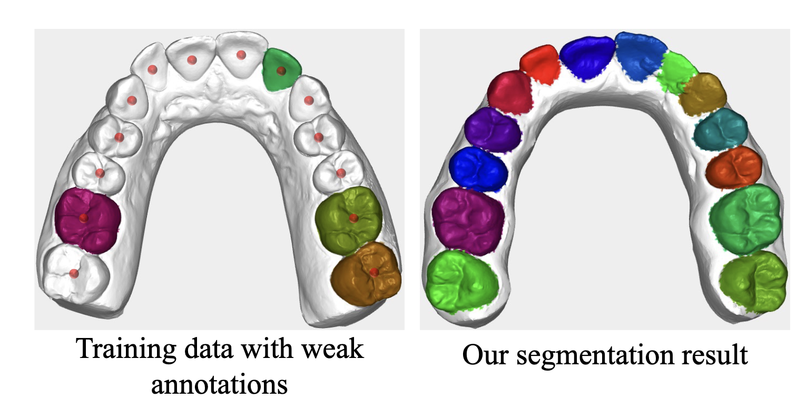
Darch: Dental arch prior-assisted 3D tooth instance segmentation
IEEE/CVF Conference on Computer Vision and Pattern Recognition (CVPR), 2022
Blog Posts
Neural Objects: The Missing Abstraction in World Models
March 2026
There has been significant progress in teaching machines to model the world, from large language models over text to world models that predict pixels or states over time. This post argues that objects are the missing abstraction in between.